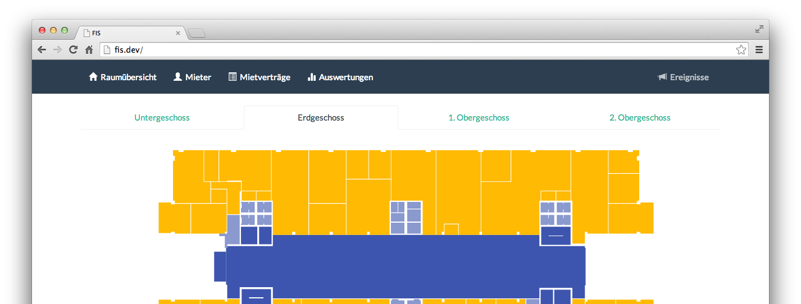

Flächen-Informations-System FIS

Facility Management. Für Gründerzentren. Und für das 21. Jahrhundert.
Mithilfe des FlächenInformationsSystems FIS von Trilane können Sie erfassen, analysieren und auswerten, wie effizient Ihre Flächenkapazitäten ausgelastet sind. Behalten Sie den Überblick über Ein- und Auszüge, individuelle Nebenkosten und andere wertvolle Informationen.
Präsentationstermin vereinbaren
Verschaffen Sie sich den Überblick über die aktuelle Situation. Mit unserer modernen Benutzeroberfläche arbeiten Sie nicht länger mit Tabellen und Listen von Raumnummern, sondern direkt auf der Darstellung Ihres Gebäudegrundrisses.
FIS erfasst nicht nur den aktuellen Mietzustand, sondern auch in der Vergangenheit liegende Veränderungen und zukünftig geplante Ein- und Auszüge. Diese sind für jeden Raum im Detail einsehbar.
Sehen Sie sofort alles Wichtige auf dem Datenblatt eines Mieters, ohne komplizierte Filter und Auswertungen konfigurieren zu müssen.
Jede Änderung eines Mietverhältnisses wird erfasst und gespeichert, so dass Sie sofort erkennen, wie sich die Belegung des Mieters entwickelt hat. Ob im letzten Jahr oder in den letzten zehn.